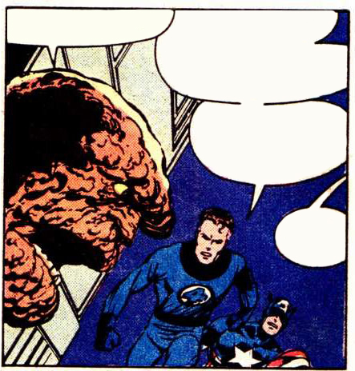
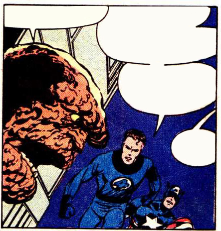
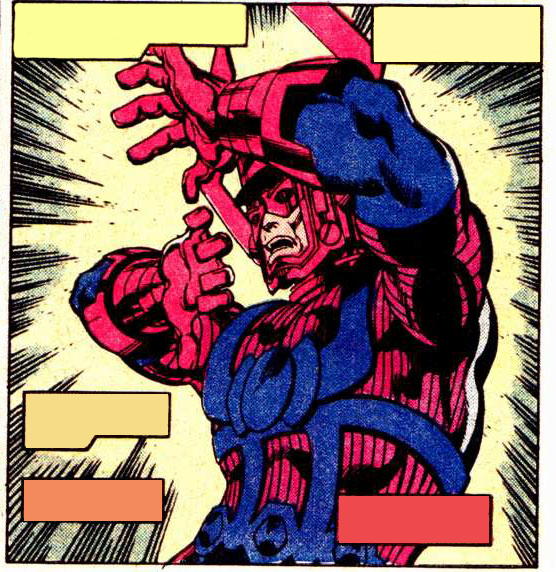
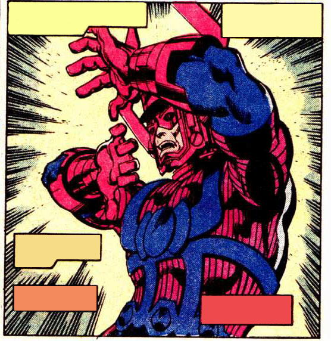

JUST BELOW...
I don't like the looks of this. Terrax said Galactus was weak, but he's holding his own against Thor and Iron Man together!
I ain't so sure of that, Torchie. Is it my

JUST BELOW...
I don't like the looks of this. Terrax said Galactus was weak, but he's holding his own against Thor and Iron Man together!
I ain't so sure of that, Torchie. Is it my imagination...
...or does Galactus look...smaller?
It's not imagination, Ben. Galactus is using his energy reserves faster than his body can replenish them. He's actually dwindling
in size.
But I fear his power may still prove too much. He may yet emerge the victor in this conflict.
Perhaps not my
friend.
 
